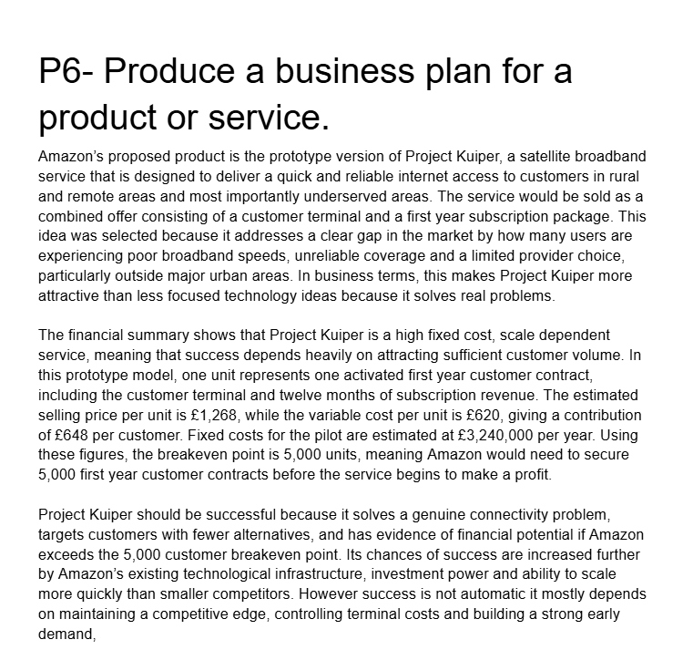
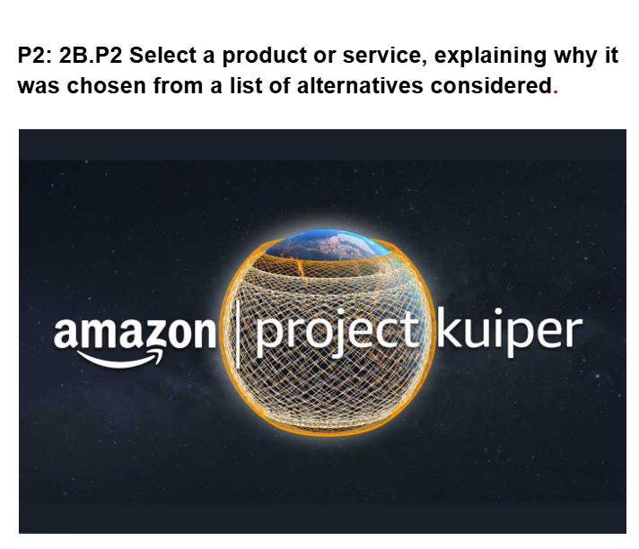

Unit 21 - A Technology Business

Evidence

Reflection
During the process of researching businesses and their upcoming projects, I learned how companies use innovation and long term planning to stay competitive within the technology industry. By researching Project Kuiper, I gained a better understanding of how businesses invest in large scale projects to solve real world problems and expand their services globally. I learned that Project Kuiper focuses on providing satellite internet access to areas with limited connectivity, showing how technology can improve communication and accessibility around the world. I also developed research and analytical skills by comparing business goals, strategies, and future plans. This helped me understand how companies evaluate risks, compete with other organisations, and use technology to grow their market presence. Looking into Project Kuiper also showed me the importance of teamwork, investment, and innovation when developing major technology projects. In the future, these skills could benefit me in careers related to business, technology, project management, or IT. The research improved my ability to analyse information, understand industry trends, and communicate ideas clearly, which are all important skills in professional environments.